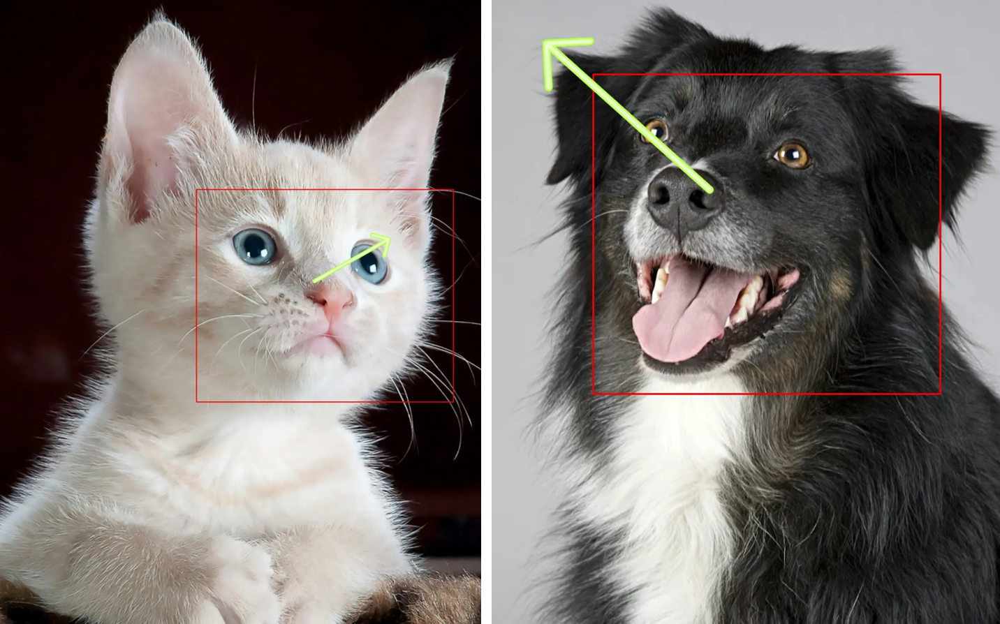

Abstract
Despite decades of research on data collection and model architectures, current gaze estimation models encounter significant challenges in generalizing across diverse data domains. Recent advances in self-supervised pre-training have shown remarkable performances in generalization across various vision tasks. However, their effectiveness in gaze estimation remains unexplored. We propose UniGaze, for the first time, leveraging large-scale in-the-wild facial datasets for gaze estimation through self-supervised pre-training. Through systematic investigation, we clarify critical factors that are essential for effective pretraining in gaze estimation. Our experiments reveal that self-supervised approaches designed for semantic tasks fail when applied to gaze estimation, while our carefully designed pre-training pipeline consistently improves cross-domain performance. Through comprehensive experiments of challenging cross-dataset evaluation and novel protocols including leave-one-dataset-out and joint-dataset settings, we demonstrate that UniGaze significantly improves generalization across multiple data domains while minimizing reliance on costly labeled data. Source code and model are available at https://github.com/ut-vision/UniGaze.
Demo Videos
Try the Live Demo
Upload an image or a short video directly in your browser. The demo is hosted at Hugging Face Space: https://huggingface.co/spaces/xucongzhang/UniGaze
BibTeX
@article{qin2025unigaze,
title={UniGaze: Towards Universal Gaze Estimation via Large-scale Pre-Training},
author={Qin, Jiawei and Zhang, Xucong and Sugano, Yusuke},
journal={arXiv preprint arXiv:2502.02307},
year={2025}
}Beyond Human Gaze Estimation
Our method also works for different "faces":
Contact
If you have any questions, feel free to contact Jiawei Qin at jqin@iis.u-tokyo.ac.jp.